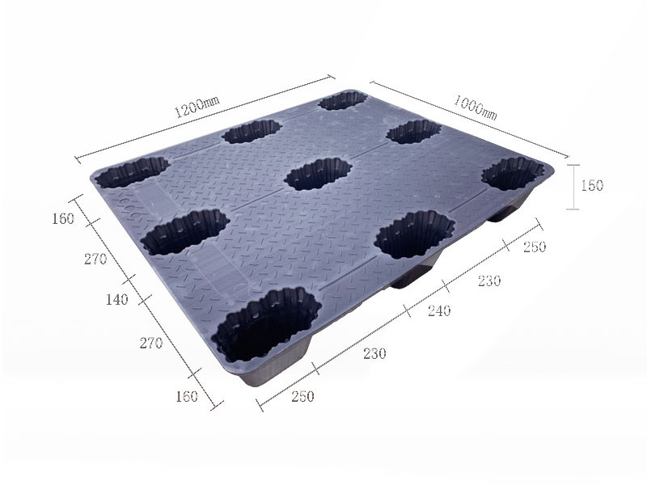
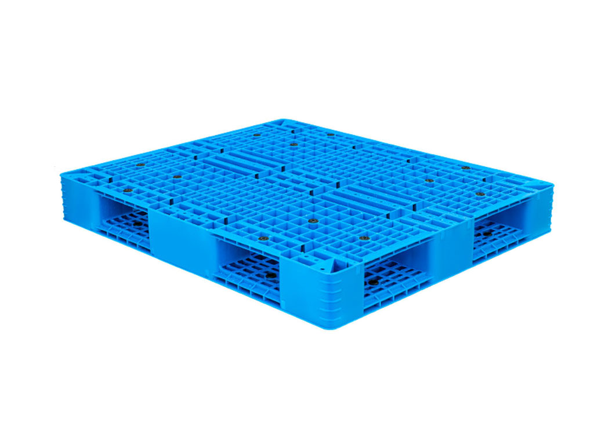
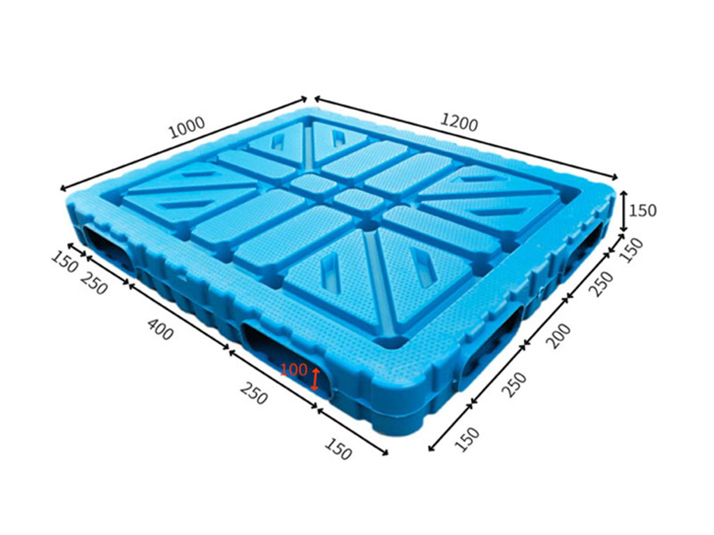
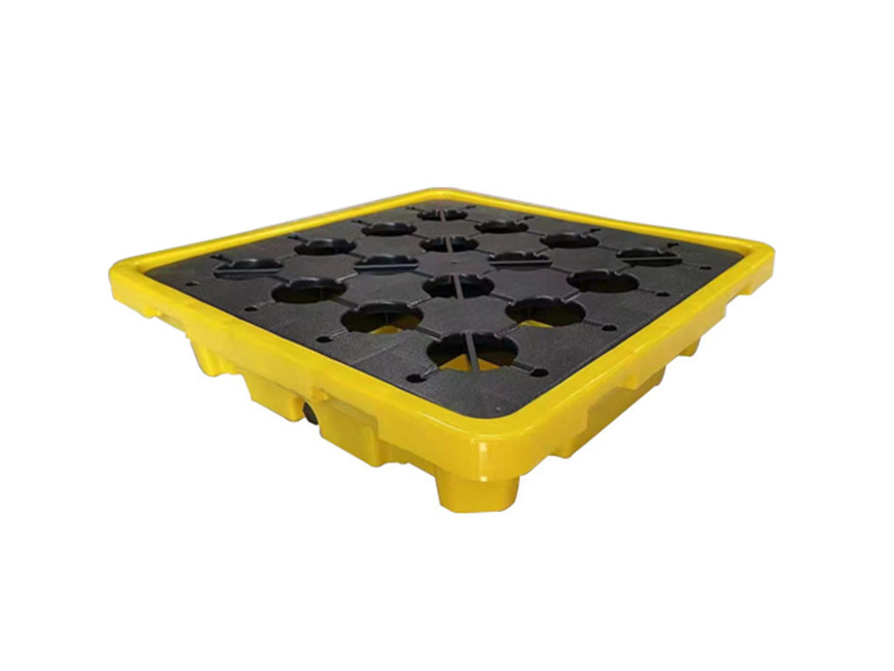

Series 01 / Rackable
Three-runner pallets
A first review path for beam racks and repeated forklift handling. Suitability depends on support geometry, load distribution, duration and temperature.
Inspect the 1210 model structurePlastic pallet families
Footprint is only the start. Base geometry, deck support, entries, storage mode, equipment and environment determine which series deserves review.
The filters demonstrate the intended buying interface. They do not calculate suitability or replace an application review.
A first review path for beam racks and repeated forklift handling. Suitability depends on support geometry, load distribution, duration and temperature.
Inspect the 1210 model structure
Prioritise nesting ratio and one-way or return economics while checking floor support, fork access and loaded stacking conditions.
Submit a return-flow brief
Review when reversible support or block stacking matters. Confirm equipment access, deck geometry and whether the load can use both faces.
Compare a stacking case
A structural route to compare where impact, handling pattern or a closed-form body changes the specification. Confirm the actual load and support case.
Describe the impact exposure
Start from the regulated or operational function: containment volume, drum footprint, access, drainage, hygiene or a dedicated load interface.
Submit the special requirementThe production version can use verified content fields to compare models without turning the website into an automatic engineering approval tool.
External length, width and height plus unit-load overhang.
Runners, legs, perimeter or reversible contact.
Fork direction, openings and pallet-jack constraints.
Floor, stack, beam rack, conveyor or automation.
Distribution, duration, temperature and exposure.